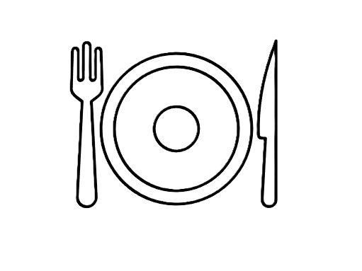

Arroz branco
Benefícios
Fonte rápida de energia
Fácil digestão
Baixo em gordura

Versátil
Ganho de massa
Repõe glicogênio
Se consumido em excesso
- Aumento do açúcar no sangue
- Menor saciedade
- Ganho de peso
- Perca de nutrientes
Carboidratos são nutrientes essenciais que fornecem energia para o corpo, sendo a principal fonte de combustível do cérebro e dos músculos. Eles estão presentes em alimentos como arroz, pão, massas, frutas e legumes.
Tabela nutricional - Porção(100g)
| Nutriente | Quantidade |
|---|---|
| Calorias | 130kcal |
| Carboidratos | 28g |
| Proteínas | 2,5g |
| Gorduras | 0,3g |
| Fibras | 0,4g |
| Índice glicêmico | Alto |